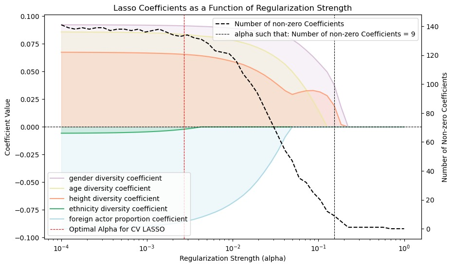
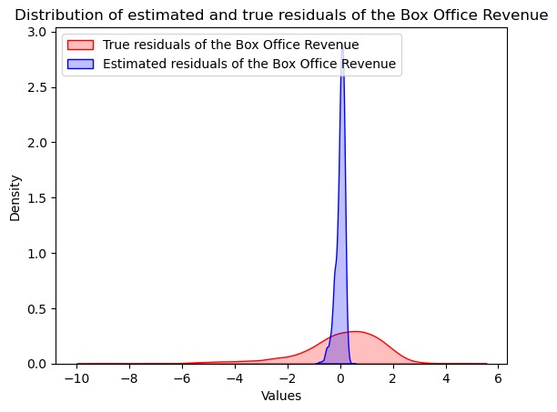
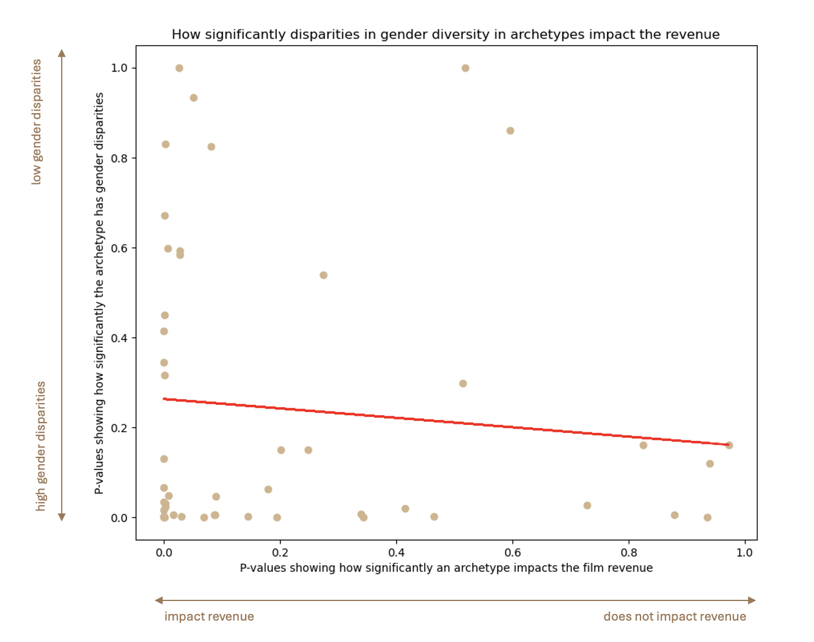
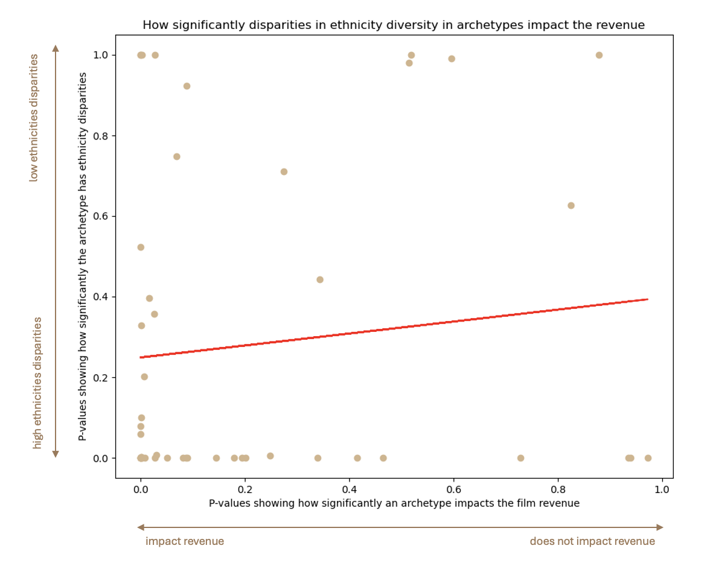

1. Go Woke, Go Broke... Really?
2. Go Woke, Really? What the Data Say...
3. Go Broke, Really? What the Data Say...
4. Conclusion
Go Broke, Really? What the data say...
Introduction
Does diversity drive box office success? To answer this, we explored the relationship between diversity and movie revenue through a step-by-step analysis—starting with a naive comparison, accounting for confounding factors through dataset balancing, and testing robustness with a sensitivity analysis.

Movie's Proportion

Naive analysis
We started by performing a naive analysis. We split the movie dataset into two equal datasets: a diverse dataset (diversity score above median diversity score) and a non-diverse dataset. We then looked at their revenue. The data reveals that diverse movies generate significantly higher revenue compared to non-diverse movies across multiple metrics, including average revenue, maximum revenue, and median revenue. Diverse movies have an average box office revenue of $117.4 million, which is nearly 33% higher than the $88.3 million average for non-diverse movies. Additionally, the top-performing diverse movie grossed $2.78 billion, more than twice the maximum revenue of $1.12 billion for non-diverse movies. The higher median and 75th percentile revenues further indicate that diverse movies tend to perform better not just at the extremes but consistently across the dataset. Moreover, a Pearson correlation coefficient of 0.1198 with a P-value of 3.28e-80 indicates a weak yet statistically significant positive correlation between diversity and revenue. While the correlation strength is low, the extremely small P-value confirms that this relationship is not due to random chance.
Imbalanced datasets?
But hold on a minute, you might say... ‘’it’s just that there’s more diversity nowadays! And today’s movies make more money. Checkmate wokebros’’. If you say that, you’re right, you’re pointing to the fact other factors such as the release date impact the probability of being diverse vs non-diverse. Therefore, if other factors diverge between the datasets, we won’t be able to know which of the varied factors actually influence the movie revenue.
We identified some factors that might differ and might impact revenue:
We observe that the diverse dataset (treated) contains more movies with more than one language and more movies with more than one country than the non-diverse dataset (control). It contains slightly more recent movies and also it has more English movies(12356 vs 12236). We therefore balanced the datasets by using propensity matching. We computed the probability of being diverse knowing the other factors. Then we matched samples to construct datasets that are identical in everything except diversity score.
Movie Revenue Distribution

Rebalanced datasets
But hold on a minute, you might say... ‘’it’s just that there’s more diversity nowadays! And today’s movies make more money. Checkmate wokebros’’. If you say that, you’re right, you’re pointing to the fact other factors such as the release date impact the probability of being diverse vs non-diverse. Therefore, if other factors diverge between the datasets, we won’t be able to know which of the varied factors actually influence the movie revenue.
The data from the balanced dataset confirms that diverse movies continue to generate significantly higher revenue compared to non-diverse movies. For diverse movies, the average box office revenue is $117.1 million, compared to only $78.3 million for non-diverse movies, reflecting a substantial difference. Additionally, the top-performing diverse movie grossed $2.19 billion, nearly double the maximum revenue of $1.12 billion for non-diverse movies. The median revenue for diverse movies is $40.4 million, while for non-diverse movies it is much lower at $18.9 million, and the 75th percentile revenue follows a similar trend ($140.9 million for diverse movies versus $71.0 million for non-diverse movies).
The Pearson correlation coefficient of 0.1280 with a P-value of 6.63e-12 indicates a weak but statistically significant positive correlation between diversity and revenue. Despite the correlation strength being relatively low, the extremely small P-value confirms that this relationship is unlikely to be due to random chance. These results suggest that diversity remains a key factor in driving higher revenue. Diverse movies likely perform better because they resonate with a broader, global audience, who are drawn to inclusive storytelling and representation. This broader appeal enhances box office performance and gives diverse movies a competitive edge in the industry.
New Movie Revenue Distribution

Sensitivity analysis
Now you might be thinking ‘’ Fine. You eliminated the other factors in your datasets. But real life is more complicated than your data. There are other factors besides date, language, and country that could influence revenue. Sorry wokebros.’’ You’re absolutely right to be sceptical about this : We therefore performed a sensitivity analysis that evaluates how robust the observed odds ratio (2.14) is to the presence of a hypothetical unmeasured confounding factor, represented by Γ (Gamma). At Γ = 2.5, the lower bound drops below 1 to 0.85, which suggests that a confounding factor with this strength could entirely nullify the observed effect of diversity, leading to no clear difference in revenue.
This analysis highlights that while the observed odds ratio is strong, the existence of a substantial unseen factor (Γ ≥ 2.5) could alter the conclusion. We would argue that such an unseen factor does not exist. The only reasonable other factor that we could think of would be the quality of the movie. We would argue that quality is actually enhanced with a greater diversity of perspectives.
So far, what can we conclude?
Our analysis suggests that diverse movies tend to generate higher revenue compared to non-diverse ones, even after controlling for key factors like release date, language availability, and geographic distribution. While the results show consistent advantages in average, median, and top-performing revenues, the observed Pearson correlations remain weak but statistically significant.
The sensitivity analysis highlights an important nuance: a strong hypothetical unseen factor (Γ ≥ 2.5) could nullify the observed relationship. However, we argue that such a factor—if it exists—is unlikely to explain away the entire effect. For example, while movie quality could be a candidate, diversity may itself enhance quality through richer storytelling and broader appeal. In sum, while diversity appears to play a role in box office performance, the relationship is complex and warrants further investigation.
Box Office Revenue VS Diversity - Fight?
The first naive approach would be to regress Box Office revenue on the different diversity scores. However, as shown in the previous plots, both diversity scores and Box Office revenue exhibit a positive trend over time. This meant that time was a confounding factor that could lead to spurious correlations. To account for this time-based trend, we need to adjust for the effect of time in our analysis.
One possible solution is to conduct residual analysis. The core idea behind residual analysis is to first regress both the diversity scores and Box Office revenue on control variables (such as time or other factors that may impact both). By doing so, we can isolate the variations in diversity scores and Box Office revenue that are not explained by these control variables. This helps remove the influence of time, allowing for a clearer examination of the relationship between diversity and Box Office performance.
Once we’ve obtained the residuals (i.e., the portion of the diversity scores and Box Office revenue that is independent of time), we can then perform a linear regression on these residuals. This method allows us to more accurately capture the relationship between diversity and Box Office revenue without the confounding influence of the release date or other variables.
Variable Selection (or Discrimination😉)
Our dataset had multicolinearity issues. Hence before doing any regression we first had to select the most important features in our dataset. To achieve this we used the LASSO with cross-validation to select features of interest for estimating the Box-Office. It was of interest that all the diversities scores where selected by the Lasso CV.
Disapointment...?
Then the residual analysis permitted the following results: The residual analysis permitted us to obtain the results below. The most important part here is that the R2 here is super low, the residuals of the different diversities coefficient explain only 1% of the variance from the mean, as seen on the distribution plot. The p-values suggested that age, height and ethnicity have a positive effect on the Box office and the proportion of foreign actor proportion has a negative effect.
| coef | P > |t| | [0.025 | 0.975] | |
|---|---|---|---|---|
| age residual coefficient | 0.0895 | 0.001 | 0.036 | 0.143 |
| height residual coefficient | 0.0867 | 0.001 | 0.034 | 0.140 |
| ethnicity residual coefficient | 0.0678 | 0.024 | 0.009 | 0.127 |
| gender residual coefficient | -0.0071 | 0.792 | -0.060 | 0.045 |
| Foreign Actor Proportion residual coefficient | -0.0869 | 0.002 | -0.142 | -0.032 |

Evolution of the most represented archetype over time
What about different characters in the movies? We wanted to explore if stereotypical characters are always played by the same ethnicities and genders or if it evenly distributed. We completed our dataset with a specific archetype the character fits in. By merging the two datasets we lost movies that did not have their characters labelled as archetypes. We further only selected archetypes with at least 50 corresponding characters, this was done to solidify the statistical significance of further analysis. After merging, we remained with a total of 4150 characters to analyze.
Lets first observe how these archetypes evolve over time in series. The bar chart race shows the prevalence of each archetype over time. The values are calculated as a sum over the 10 previous years foreach archetype.
Evolution of the gender-related archetype over time
For comparison we made the same graph but compared between male and female actors. It can be easily visualized that both bar chart races are not at all the same. Male and female actors do not play the same roles. We can clearly observe some gender specific archetypes like soldier, criminal or swordfighter for males and secretary, student or reporter for females. In the more recent years, archetypes such as superhero or vigilante are better represented in both genders but this cannot be said from all archetypes. To confirm our suspicions, we computed the chi2 test, giving a score of disproportionality of genders for each archetype. Most of the archetypes were significantly disproportionate. Here are the top 5: highschool student, journalist, handyman, secretary and socialite.
Evolution of the ethnicity-related archetype over time
And you guessed it, why stop at gender? We also investigated ethnicity. From the cropped dataset we got from selecting archetypes, we selected the 4 more represented ethnicities and made the same bar chart race for each of them. By observing them, we can clearly see that none of them resemble each other, even in more recent years. We did the chi2 tests again to see the distribution in archetypes by ethnicity. Again, most of them were very disproportionate. Here are the top 5: police officer, handyman, mercenary, worrior, mass murderer.
So in conclusion, yeah the archetypes are stereotyped. The proportion of genders and ethnicities in the archetypes does not reflect the proportions of genders and ethnicities in the actor landscape.
SuperMan VS SuperWoman: Who's the best cash provider?
So diversity does not impact film revenue? That’s a great point. But how about diversity inside the archetypes? Let’s say we have a woman as a superhero, does it really impact the revenue? Or a special ethnicity in a non-traditional archetype for them? We have seen previously that there are big disparities in diversity attributes in the archetypes. So a handyman is often male and a secretary female in movies, but does this contribute to the revenue? We will analyze if stereotypical archetypes do better in film revenue than non-stereotypical archetypes.
We first did a linear regression with the archetypes predicting the movie revenue. As done in the previous analysis, the linear regression did not predict directly the movie revenue but the residues of release date predicting revenue. This is done to adjust for the release date. We retained the p-values for each archetype. Mind you, we are trying to find out if it statistically influences the revenue, not by how much. Then, for each archetype, we did a chi2 test to observe if there is a significant drift in proportions of genders and ethnicities. Finally we plotted the p-values of the diversity in archetypes against the film revenue and did a linear regression. The linear regression is important for its p-value. If the p-value is less than 0.5, it means that disparities in roles have an influence on the film revenue, otherwise, it means that there is no significant relationship.

Let's look at the graphs now, particularly the p-values. The p-value when looking at the gender disparities is 0.505. Which is not significant. This means that whether a male or female incarnates an archetype it will not have a significant role in the revenue of the movie. Put simply, the fact that the superhero in the movie is male or fema does not play a significant role for the revenue.

What can we conclude? Click Here To Know